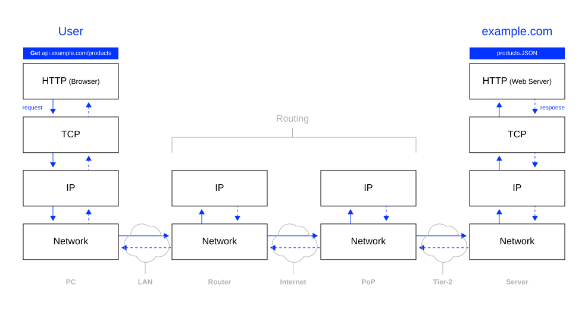

Revision
Emerging technologies
Rotolo et al. (2015) outlines five attributes that classify emerging technologies and differentiate them from other technologies:
- Radical novelty
- Relatively fast growth
- Coherence
- Prominent impact
- Uncertainty and ambiguity
Hypothesis 1
Emerging information technologies enable multimodal and immersive systems.
Multimodality
Multimodality refers to the use of multiple modes of communication to to create meaning.
Multimodality implies that the use of several means of communication contributes to a better overall understanding of a message.
Adami (2016)
Immersion
Immersion refers to the state of being deeply engaged, absorbed, or submerged in an environment, either physically or mentally.
Immersion implies that the consciousness of the immersed person is detached from their physical self. Immersiveness is the quality or degree of being immersive.
Interdependency
Stimuli that determine the immersiveness of environments created by technology are multimodal.
Visual, auditory, tactile, olfactory, and interactive.
Hypoptheses 2
Emerging information technologies enable intelligent and affective systems.
Intelligence
Intelligent systems work in complex environments, have cognitive abilities, and exhibit complex behavior.
The capacity to work in a complex environment is described as agency, cognitive abilities are, for instance, perception and language, and complex behavior is reflected, for instance, by rationality and learning.
Russel & Norvig (2022)
Affection
Affective computer systems exhibit human-like capabilities of observation, interpretation and generation of emotions.
Affective systems simulate empathy. They can interpret the emotional states of humans and adapt their behavior to them, giving an appropriate response for those emotions.
Tao & Tan (2005)
Hypothesis 3
Emerging information technologies enable strongly interconnected and distributed systems.
Interconnectedness
Definition
Interconnectedness refers to a formal linkage between two different systems.
Interdependence, denotes a closer relationship in which two systems are not only connected, but depend on each other in some way, such as functionally.
Not all interconnected systems are interdependent,
but all interdependent systems are interconnected.
Zimmerman (2001)
Computer networks
A computer network is a collection of computers and devices connected so that they can share information and services.
Unlike phone lines or cable TV, which are designed for specific tasks, computer networks are flexible. They use general-purpose equipment that can handle many kinds of data.
This versatility allows computer networks to support a vast and constantly evolving range of applications.
But a network doesn’t just physically connect boxes, it connects purposeful systems: information systems.
Information systems
An Information System (IS) is the “purposeful system” that gives meaning to a network connection. It is a structured entity designed for interaction (Krcmar, 2015).
| Logical | Structured | Interconnected |
|---|---|---|
| Defined by perimeters and inputs/outputs | Can be broken into subsystems | Exists in interaction with other systems |
| Can be modeled at various levels of abstraction | Viewed through layers (purpose, function, composition) | Connects to other systems via specific gateways |
| Described through different perspectives | Evolves through various stages in its lifetime | “No IS is an island” |
Because no IS is an island, we need a global, standardized mechanism to manage these interfaces and interactions at scale. That mechanism is the Internet.
The Internet
When we take these Information Systems (the nodes) and link them via Computer Networks (the infrastructure) on a global scale, we get the Internet.
The Internet can be defined as a public wide area computer network that uses the TCP/IP protocol suite to interconnect computer systems across the world.
The Internet provides a vast range of information resources and services such as communication (e.g., electronic mail, telephony, and instant messaging), or file transfer (e.g., file sharing, FTP, video, and audio streaming), and the metaservice WWW.
Sunyaev (2020)
Internet connection
POP = Point of Presence, IXP = Internet Exchange Point, ISP = Internet Service Provider
- The transmission is initiated by the end user , whose computer is connected with the Point of presence (POP) of his regional ISP. The POP is a local access point of an ISP where the telecommunication lines from commercial or domestic buildings are connected to the ISP’s network.
- Destination is not in the regional ISPs network, therefore handover to a tier 1 ISP
- Tier 1 ISP establishs a connection with the tier 1 network, the destination tier 2 ISP is part of
- Tier 1 ISP establishs a connection with the destination tier 2 ISP
- POP connects tier 2 ISP with the destination endpoint
Tier-1 networks are the backbone of the internet. They are the elite internet service providers (ISPs) that can reach every other network on the internet without relying on any other provider. Here’s what makes them special:
- Global reach: Tier-1 networks have extensive infrastructure spanning multiple countries, often built and owned by them. This allows them to directly connect to a vast portion of the internet.
- Peering agreements: Unlike other ISPs that might pay to route traffic through larger networks, Tier-1s exchange traffic directly with each other through peering agreements. These agreements are typically free and reciprocal, meaning both parties benefit from the direct connection.
- High capacity: Tier-1 networks are built to handle massive amounts of internet traffic. They have robust infrastructure with high bandwidth capabilities to ensure smooth data flow.
- Independent routing: Because they don’t rely on other providers for transit, Tier-1 networks have more control over how they route traffic. This can lead to faster and more reliable connections for users.
Tier-2 networks are the workhorses of the internet, providing internet access to a large portion of users. Unlike Tier-1 networks, they don’t have the same level of global reach and independence, but they play a vital role in connecting users to the broader internet. Here’s how they function:
- Regional or national reach: Tier-2 networks typically operate within a specific region or country. They have their own infrastructure but might not have the extensive global reach of Tier-1 providers.
- Hybrid approach to traffic routing: Tier-2 networks use a combination of methods to reach the wider internet:
- Peering: They establish peering agreements with other networks, including Tier-1s and other Tier-2s, to directly exchange traffic for specific destinations. This helps reduce reliance on expensive transit fees.
- Transit: In some cases, Tier-2 networks might purchase transit services from Tier-1 providers to reach parts of the internet that they don’t have direct peering connections with.
Internet Protocol Suite
The Internet Protocol Suite is a set of protocols that enable communication over the Internet by specifying data transmission, addressing, and routing.
The protocol suite encompasses protocols that are designed to work together to govern how data is transferred from one system to another. The most important protocols are BGP, TCP and IP.
Sunyaev (2020)
Border Gateway Protocol (BGP)
BGP is the routing protocol that makes the Internet possible as an interconnected system of autonomous networks.
It enables different, independent networks (i.e., Autonomous Systems) to exchange routing information and determine the best paths for data to travel across the global Internet.
- Each network announces which IP addresses it can reach
- Neighboring networks share these announcements
- Routers build a dynamic map of possible paths
- BGP selects optimal routes based on policies and network conditions
Peterson & Davie (2007)
Autonomous Systems (AS)
- The Internet consists of thousands of independent networks (ISPs, companies, universities, CDN providers)
- Each has an AS number (e.g., Google is AS15169, Cloudflare is AS13335)
Why BGP matters for interconnectedness
- Creates a self-organizing, distributed mesh network
- No central authority controls routing decisions
- Enables dynamic adaptation when networks fail or change
- Makes CDN technologies like Anycast routing possible
Connection to previous slide
- BGP is how Tier-1 and Tier-2 ISPs coordinate routing
- Peering agreements rely on BGP announcements
- This distributed decision-making exemplifies the hypothesis: emergent technology (BGP) enables strongly interconnected systems
Example: When you access a website through a CDN, BGP routes your request to the nearest edge node by having multiple locations announce the same IP address.
TCP/IP
TCP/IP enables open networks by providing a universal, layered language for diverse devices to communicate, breaking data into flexible packets that find the best route, ensuring reliability with error-checking (TCP) (i.e., robustness1), and operating on open, non-proprietary standards, making it a common, accessible foundation for the internet, independent of specific hardware or software2).
In essence, TCP/IP acts like a universal postal system for data, where everyone uses the same addressing (IP) and delivery rules (TCP), allowing any sender to reach any recipient, making the internet an open platform.
- IP is responsible for addressing host interfaces, encapsulating data into datagrams and routing data from a source host to a destination host
- TCP guarantees that all bytes are received in the right order by using positive acknowledgements (ACK) with re-transmission3
TCP/IP stack
The application layer
- provides applications with standardized interfaces that allow to send data to other applications and receive data from them
- makes use of lower layers and treats them as black boxes
The transport layer
- provides end-to-end data transfer by delivering data from an application to a remote or a local host
- TCP is well suited where data integrity is important
- UDP provides highly efficient but less reliable data transmission and has no error recovery mechanism. It is therefore used for applications that need a fast transport mechanism and can tolerate the loss of some data (e.g., video streams)
The network layer (or Internet layer)
- exchanges data in form of datagrams across network boundaries, provides a uniform networking interface and enables internetworking
- defines the addressing and routing structures for the TCP/IP protocol suite. (IP is a connectionless protocol that provides a routing function that forwards data to a specific destination in the network that is identified by its unique IP address)
The data link layer (network interface layer or physical layer)
- provides the interface to the actual network hardware
- is the lowest layer because TCP/IP is designed to be hardware independent. As a result TCP/IP
- may be implemented on top of any networking technology
- includes all protocols used to describe network topology and to move data between two different hosts (e.g., Ethernet)
Scalability
- Decentralized design - No central control; each router makes autonomous decisions
- Hierarchical addressing (IP) - Enables efficient routing in massive networks
- Statelessness at IP level - Routers don’t need to store connection states
- Packet switching - Dynamic load distribution across different paths
Flexibility
- Layering principle - Each layer can be developed independently (each layer provides services to the layer above and uses services from the layer below, but doesn’t need to know how those services work internally)
- Technology independence - Runs over any physical medium (Ethernet, WiFi, fiber optic, etc.)
- End-to-end principle - Complexity resides at endpoints, not in the network
- Modular protocols - TCP for reliability, UDP for speed - choose as needed
192.168.x.x is one of the private IP address ranges reserved specifically for internal networks like home networks, office LANs, etc.
Private IP ranges (RFC 1918)
- 10.0.0.0 - 10.255.255.255 (large organizations)
- 172.16.0.0 - 172.31.255.255 (medium networks)
- 192.168.0.0 - 192.168.255.255 (home/small office - most common)
Key characteristics
- Not routable on the public Internet - Your router blocks these from going out
- Reusable - Millions of homes can use 192.168.1.1 simultaneously without conflict
- NAT (Network Address Translation) converts them to your public IP when accessing the Internet (a clever workaround for IPv4’s limited address space)
Data transmission example

Importance
The internet protocol suite based on TCP/IP is the foundation upon which the modern internet is built, and its importance extends to a vast range of emergent digital technologies such as IoT, Cloud computing, and mobile computing.
TCP/IP provides a universal language, is open and standardized, is highly scalable, and allows for great flexibility.
TCP/IP acts as a universal language for communication between devices on a network. It defines a set of rules and protocols that ensure data is broken down into packets, addressed correctly, and delivered reliably across different network types. This universality allows various devices and technologies to seamlessly connect and exchange information.
TCP/IP is an open standard, meaning its specifications are publicly available and not controlled by any single entity. This openness fosters innovation and development as anyone can build technologies that interoperate with the TCP/IP framework. This has been crucial for the rapid growth and diversification of the digital landscape.
TCP/IP is designed to be scalable and flexible. It can handle a vast number of devices and networks, making it adaptable to the ever-growing demands of the digital world. This scalability is essential for supporting the massive growth of connected devices and data traffic associated with emergent technologies.
TCP/IP is a modular protocol suite, meaning it consists of independent protocols that work together. This modularity allows for flexibility and customization. New protocols can be added or existing ones modified to address specific needs of emerging technologies.
Summary
Emergent digital technologies facilitate more strongly interconnected systems, as they enhance
networking infrastructure, connectivity capabilities, and interoperability (e.g. through standardization).
Examples of interconnected systems are
smart cities, connected cars (Car2X), and smart supply chains.
Advancements in networking infrastructure: Emerging technologies like 5G networks and advancements in fiber optic cables are enabling faster and more reliable data transmission. This improved infrastructure allows for a greater volume of data exchange and supports the growing number of interconnected devices.
Enhancements in connectivity capabilities: Emerging technologies allow to connect and exchange data more efficiently and reliably, e.g., due to miniturization, improved battery live, improved network management, self-configuration capabilities, etc.
Standardization and interoperability: New protocols and standards are constantly emerging to ensure different technologies can work together. This fosters a more interconnected ecosystem where devices and platforms can communicate and share information more easily.
Governance challenge
One challenge example relates to the governance of interconnected systems:
Who controls the connections?
Interconnected systems raise questions about power and control:
E.g., ISPs can influence traffic flow, when they act as gatekeepers and they can decide how data flows through their networks, and prioritize certain traffic.
This brings us to a critical debate: Net Neutrality
Case Study: Net Neutrality and Network Control
Motivation
We have seen how the internet—the most important interconnected system today— is conceptualized as a free and open network of networks built on open, non-proprietary standards like TCP/IP and BGP.
Yet it relies on ISPs and Tier-1/Tier-2 networks as gatekeepers.
So who actually has power in this interconnected system?
Net neutrality addresses this fundamental tension in network architecture, aiming to keep the internet free and open.
The concept
Net neutrality signifies the principle that the Internet is a “common carrier”—a neutral pipe that does not distinguish between the types of content it carries.
A maximally useful public information network aspires to treat all content, sites, and platforms equally. (Wu, 2003, p. 142).
- Accessibility: Small content providers can deliver data just as fast as tech giants (e.g., a local startup vs. YouTube).
- Single Billing: Consumers pay for the “pipe” once, without “premium” fees for specific apps.
- Non-Discrimination: ISPs do not favor or block specific traffic for competitive advantage.
The power of “the connectors”
Because the Internet is a tiered system of private networks (Tier-1 & Tier-2), the owners of the infrastructure have the technical capability to act as gatekeepers.
- Zero-rating: Not counting specific apps (e.g., Spotify) against data caps, creating an unfair advantage over competitors.
- Throttling: Intentionally slowing down specific protocols (e.g., P2P file sharing or high-def video streams).
- Paid Prioritization: Creating “fast lanes” for companies that can pay, while others are relegated to the “slow lane.”
Distributed systems like the Web 3.0 are built to bypass central gatekeepers.
From connection to distribution
Connectivity enables coherence
While interconnectedness focuses on the transmission and linkage between systems, distributivity addresses the organization and coherence of the overall system.
| Feature | Interconnectedness | Distributivity |
|---|---|---|
| Focus | How data is transmitted | Where data is processed and stored |
| Metaphor | The global highway system | The city planning and governance |
| Role | Connectivity: Points talk to each other | Coherence: Points work as one system |
| Foundation | Protocols like BGP and TCP/IP | Architecture like Cloud and Web 3.0 |
The internet protocols provide the interconnectedness required to build distributed architectures that are robust, scalable, and independent of a single central authority.
Distributivity
Distributed systems
A distributed system is a collection of independent computers that appear to its users as a single coherent system.
The independent computers, also known as nodes, communicate and coordinate their actions by passing messages as they do not share a common memory.
Andrew S et al. (2002)
Key characteristics
Key characteristics of distributed systems include:
autonomy, hidden complexity (transparency), reliability, scalability, and efficiency.
Open distributed system are further characterized by their ability to integrate and interoperate with heterogeneous components, achieved through standardized interfaces and protocols that ensure different components can communicate and function together seamlessly.
Attiya & Welch (2004)
- Autonomy
- Each node operates independently and has its own local memory. Distributed systems can be composed of different types of hardware and software components.
- Transparency
- Transparency means hiding the complexity of distribution from users and applications. A distributed system that is able to present itself to users and applications as it were only a single computer system is said to be transparent.
- Reliability
- Distributed systems are designed to be fault-tolerant. This means that even if one or more nodes fail, the system can continue to operate with minimal disruption.
- Scalability
- The system can grow by adding more nodes without significant changes to its architecture. This allows them to handle increasing demands and workloads effectively.
- Efficiency
- While distributed systems introduce some overhead due to communication and coordination between nodes, they can also achieve efficiency by distributing tasks and leveraging parallel processing capabilities of multiple nodes.
Example: WWW
The World Wide Web is an information space in which the items of interest, referred to as resources, are identified by global identifiers called Uniform Resource Identifiers (URI) (Berners-Lee et al., 2004).
Resources are hosted on servers distributed worldwide, and information is routed efficiently through various networks and ISPs to reach the end user.
Distributed vs. decentralized systems
Both distributed and decentralized systems involve multiple nodes working together.
However, the key difference lies in how control and decision-making are managed.
Distributed systems can have a central coordinating authority, whereas decentralized systems distribute control and decision-making equally among all nodes.
Degrees of decentralization
Distributed computing
Distributed computing refers to the use of distributed systems to solve computational problems—a problem is divided into many tasks, each of which is solved by one or more computers that communicate with each other.
Attiya & Welch (2004)
Distributed computing is a model in which components of a software system are shared among multiple computers to improve efficiency and performance.
Examples
Some notable examples and use cases of distributed computing:
Training neural networks, analyzing large-scale DNA sequences, climate modelling, performing large-scale risk assessments, and swarm robotics.
- Training Neural Networks
- Distributed computing is extensively used in training AI and ML models, which require processing vast amounts of data. For instance, companies like Netflix and Amazon use distributed computing platforms to deploy recommendation algorithms that process millions of requests per second, providing personalized recommendations in real-time.
- Genomics
- Distributed computing is used to analyze large-scale DNA sequences. Projects like the Human Genome Project, which mapped the entire human genome, leveraged distributed computing to handle the enormous computational resources required.
- Climate Modeling
- Distributed systems are used to run complex climate models that predict weather patterns and climate change by processing large datasets from various sources.
- Risk Assessment Models
- Financial institutions use distributed computing to perform large-scale risk assessments and economic simulations. For example, a global investment bank used Hazelcast Platform to perform highly parallelized calculations for risk exposure in capital markets
- Swarm Robotics
- This involves multiple AI-powered autonomous agents working together to perform tasks, such as in robotics where multiple robots collaborate to complete a mission.
Summary
Distributed systems and distributed computing are integral to the advancement of emergent digital technologies as they they provide the necessary infrastructure for …
scalability and efficiency, fault tolerance and reliability, real-time processing, data privacy and security, and cost-effectiveness.
As digital technologies continue to evolve, the role of distributed systems will only become more critical in enabling innovative applications and services across various industries.
- Scalability and efficiency
- Distributed systems allow for horizontal scaling, which means adding more nodes to handle increased workloads without significant changes to the system architecture. This scalability is crucial for modern applications that need to handle large volumes of data and high user traffic efficiently.
- Fault tolerance and reliability
- Distributed systems are designed to be fault-tolerant, meaning they can continue to operate even if some components fail. This reliability is essential for critical applications such as financial transactions, healthcare systems, and autonomous vehicles, where downtime or data loss can have severe consequences.
- Real-time processing
- emergent technologies like edge computing and the Internet of Things (IoT) require real-time data processing. Distributed systems enable data to be processed closer to its source, reducing latency and improving response times, which is vital for applications such as autonomous driving, industrial automation, and remote health monitoring.
- Data privacy and security
- In distributed systems, data can be processed locally, which enhances privacy and security by reducing the need to transmit sensitive information over potentially insecure networks. This is particularly important for applications in healthcare, finance, and other sectors that handle sensitive data.
- Cost-effectiveness
- Distributed computing can be more cost-effective than traditional centralized systems. By leveraging clusters of low-cost machines, organizations can achieve high performance without the need for expensive, high-end hardware.
Case Study: The Decentralized Web
Problem statement
The internet as it is today4 is increasingly dominated by a few large platforms5 and cloud service providers6 — counteracting the original decentralized nature of the internet.
What has driven this development?
Reasons
- Network effects
- Web 2.0 platforms thrive on network effects. The more users a platform has, the more valuable it becomes to others who want to join. This creates a snowball effect, making it difficult for new competitors to gain traction.
- Data advantage
- The dominant companies collect vast amounts of user data on their platforms. This data allows them to personalize user experiences, target advertising effectively, and develop new features that keep users engaged. It’s a cycle that feeds itself – the more data they have, the better their services become, attracting more users and even more data.
- Barriers to entry
- Building and maintaining large-scale web infrastructure is expensive. It requires significant investments in servers, data centers, and content delivery networks. This creates a barrier for new players to compete with established giants who already have this infrastructure in place.
- ISPs and control of access
- ISPs (Internet Service Providers) act as the gatekeepers to the internet. They can potentially influence the speed and accessibility of certain websites, giving an edge to well-established platforms that have negotiated deals with them.
- Regulations and laws
- The current regulatory landscape might favor existing companies. It can be challenging for new startups to navigate complex data privacy laws and copyright regulations.
Web 3.0
The decentralized web, often referred to as Web3, aims to restore the original decentralized nature of the internet.
Web3 is an evolving concept, which encompasses technologies broadly aimed at providing greater transparency, openness, and democracy on the web.
Evolution of the web
| Feature | Web 1.0 | Web 2.0 | Web 3.0 (Web3) |
|---|---|---|---|
| Focus | Information access and publishing | User-generated content and social interaction | Decentralization, user ownership, and machine understanding |
| User Role | Consumer of information | Content creator and consumer | Active participant and potential owner |
| Data Storage | Centralized servers | Centralized servers controlled by platforms | Potentially distributed storage using blockchains |
| Key Technologies | HTML, static web pages | Social media platforms, mobile web, APIs | Blockchain, cryptocurrencies, semantic web |
| Examples | Simple websites, directories | Facebook, YouTube, Wikipedia | Early stage |
Web 3.0 applications
Murray et al. (2023) propose that following four key applications could play a significant role in Web3:
- Cryptocurrencies
- Digital tokens that can be used for secure online transactions without relying on banks. Think of them like digital money, but not controlled by any one government. These digital tokens could be the fuel for Web3, facilitating transactions and potentially serving as a unit of account within decentralized applications.
- Metaverses
- Immersive virtual worlds accessed through VR or AR technology. Users can interact with each other, own virtual land or items (potentially as NFTs), and participate in various activities. These virtual worlds could be a major platform for Web3 experiences, where users interact, spend their crypto, and potentially own virtual assets as NFTs.
- NFTs (Non-Fungible Tokens)
- Unique digital certificates that represent ownership of digital assets like artwork, music, or even virtual items within a Metaverse. Unlike currencies, each NFT is one-of-a-kind. NFTs could represent ownership of digital assets within the Metaverse and potentially other Web3 applications. Imagine using an NFT to represent your unique avatar in a virtual world.
- DAOs (Decentralized Autonomous Organizations)
- Online communities with shared goals, governed by rules encoded on a blockchain (a secure digital ledger). Decisions are made collectively by members through voting with tokens they own. DAOs could be a way to govern online communities and manage resources within Web3 projects. For instance, a DAO could oversee a virtual world within the Metaverse.
Example: Cloud Computing
Definition
Cloud Computing is a model which enables flexible and demand oriented access to a shared pool of configurable IT resources which can be accessed at any time and from anywhere via the Internet or a network.
Mell et al. (2011)
Emergence
The arrival of the cloud computing era can be seen as an evolutionary development in the history of computing. It is the result of the progress of various technologies, such as:
Hardware
(e.g., virtualization)
Internet technologies
(e.g., web services)
Distributed computing
(e.g., networks, clusters)
Voorsluys et al. (2011)
Importance
Cloud computing provides the infrastructure that fuels the digital transformation.
Enabled by the Internet and distributed computing, cloud computing
- powers digital trends such as mobile computing, IoT, Digital Twins, and AI;
- accelerates industry dynamics and disrupts existing business models; and
- will continue to transform the world we live in on multiple levels and in various ways.
Benlian et al. (2018)
Cloud Computing stack
Unique characteristics of cloud services
Service-based IT resources, on demand self-service, ubiquitous access, multitenancy, location independence, rapid elasticity, and pay per use billing.
Mell et al. (2011)
Service-based IT resources
- All cloud offerings can be expressed as a service
- Each service comes with a Service Level Agreement, defining functions and qualities
On demand self-service
- A consumer can provide computing capacity (e.g., server time, network storage and user licenses) unilaterally and automatically as required
- No need for human interaction with a service provider
Ubiquitous access
- Cloud services are provisioned via the Internet or private networks
- Cloud service rely on standardized interfaces to ease interaction
- Consumption by heterogeneous thin or thick client platforms (e.g., mobile phones, tablets, laptops, and workstations)
Multitenancy
- The provider’s computing resources are pooled to serve multiple consumers
- Using a multi tenant model, with different physical and virtual resources dynamically assigned and reassigned according to consumer demand
- Sharing computing resources is part of what could makes cloud computing economically beneficial
Location independence
- There is a sense of location independence in that the cloud customer generally has no control over or knowledge of where the provided resources are actually located
- This challenges providers to be compliant with existing data protection requirements, among others
Rapid elasticity
- Capabilities can be elastically provisioned and released, in some cases automatically, to scale rapidly outward and inward commensurate with demand
- To the consumer, the capabilities available for provisioning often appear to be unlimited and can be appropriated in any quantity at any time
Pay per use billing
- Cloud systems automatically control and optimize resource use by leveraging a metering capability at some level of abstraction appropriate to the type of service (e.g., storage, processing, bandwidth, and active user accounts)
- Resource usage can be monitored, controlled, and reported, providing providing transparency for both the provider and consumer of the utilized service
Advantages of cloud services
Due to its inherent characteristics, cloud computing enables persons and organizations to achieve diverse benefits and opportunities, such as
Low entry barriers, access to leading edge tech, focus on core capabilities, reduced time to market, greater flexibility, and enhanced cost-control.
Sunyaev (2020)
Hot topics
Cloud computing powers digital trends such as
Cloud gaming,
AI as a service,
GAIA-X as well as
Fog and Edge Computing.
Summary
Interconnectedness and distributivity are crucial aspects of cloud computing.
- Cloud computing relies heavily on interconnected networks. The internet, along with private networks, allows various cloud data centers, servers, and user devices to communicate and share resources seamlessly. This interconnectedness enables users to access cloud services and data from anywhere.
- Cloud services are rendered by distributed systems. Cloud storage, applications, and services run on a vast network of interconnected computers spread across data centers. These individual computers work together to provide unified services.
Literature
Footnotes
Robustness refers to the a built in failure recovery mechanism that provides reliable end to end communication↩︎
Independency refers to the fact that there are no specific hardware and software requirements↩︎
The receiver responds with an positive acknowledgements (ACK) for ever data packet received, sender retransmits packets for missing ACKs after a given time↩︎
The internet as of today is often termed Web 2.0↩︎
Dominant internet players are the large platforms for e.g., social media, marketplaces, and CDN↩︎
The internet big five, also known as GAFAM, are Google, Amazon, Meta (formerly Facebook), Apple, and Microsoft↩︎
NFT stands for Non-fungible Tokens↩︎
DAO stands for Decentralized Autonomous Organizations↩︎